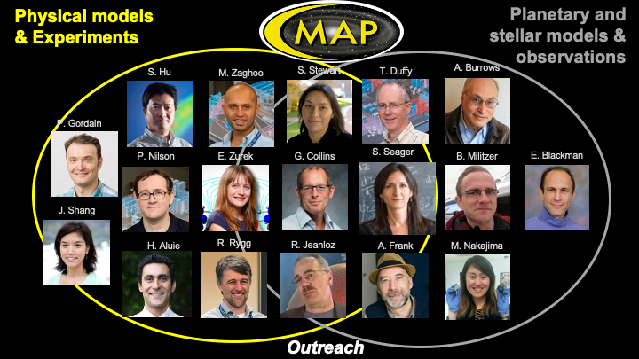
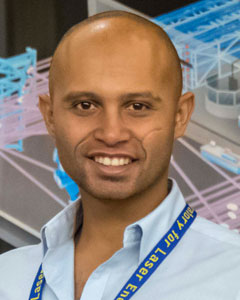

Research notes
 Mohamed Zaghoo
Mohamed ZaghooApplied Physicist · AI Post-Training Lead · Technical Founder

Physics · AI · Financial technology
I am an applied physicist and technology founder, currently CEO and Chief Product Officer of AMWAL Tech. I lead the development of embedded-finance infrastructure built on biometric identity, working with lenders, banks and payment networks across MENA on credit provisioning and authentication.
Alongside AMWAL, I lead a team of PhD scientists at Mercor contributing physical-sciences expertise to frontier-model post-training and reinforcement learning, including work supporting OpenAI. I also founded Madena AI, an initiative focused on Arabic datasets, reward models and evaluations. My research interests include scalable oversight and the reliability of rewards and verifiers in scientific and professional domains.
My background is in experimental physics. I earned my PhD in Applied Physics at Harvard and worked as an assistant professor and senior scientist at the University of Rochester’s Laboratory for Laser Energetics from 2017 to 2021. My research explored planetary interiors, metallic hydrogen and matter under extreme conditions. I later worked in AI and data consulting at McKinsey’s Digital Practice and QuantumBlack.
More about meDownload CVFrom my physics research
Our research on high-energy density materials was awarded a $4 Million grant from DOE (see more)